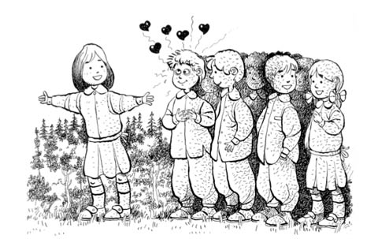

EMİRSULTAN VE YENİ EV
Çekirge’deki evde üç ay kadar oturduk. Daha doğrusu, babamın yeni kiraladığı evin bitmesini bekledik. Muhit, Emirsultan... Yeni evimiz orada.
Bir akşamüzeri babam bizi aldı, “Gidiyoruz” dedi. Âdet mi öyleydi, yoksa insanların canı mı tezdi, “Haydi” dendi mi çoluk çocuk kapıya dizilmemiz beş dakikayı bulmazdı. Şeriflerle gidileceği zaman hariç! Şerif’in konuşmaktan dolayı çoraplarını giymesi, temizinden yarım saat alırdı.
Neyse efendim, o akşamki ziyaretimiz Emirsultan’daki yeni taşınacağımız evin sahibi. Onlar da kiraya verecekleri evin bitmesini bekliyorlar. O apartmanda üç daireleri varmış, arsa sahibi oldukları için karşılığında verilmiş. Şimdiki Heykel denen muhitte, ara sokakların birinde bir apartman. Çaldık kapıyı, iyi akşamlar temennileri; güleç, ak saçlı, ak yüzlü bir amca ve onun kadar sevimli bir teyze. Amca benim, teyze annemin adaşı; Ahmet Amca ve Güler Teyze.
Ahmet Amca da babam gibi bir zamanlar subaymış, şimdi emekli. (Babam yeni binbaşı.) Buyur ettiler, geçtik salona; sade, sıcak, sevimli bir salon. Halı üzerinde bir kız çocuğu sessiz sakin oturuyor. Adı Gamze, torunlarıymış. Anne babası bir süre buraya bırakmışlar. Kız kardeşim Aytül’e yakın düzeyde bir konuşması var (ikisi de anlaşılabilir düzeydeler). Son bir yıldır Aytül acayip söktü konuşmayı, herkesin anlayabileceği kadar konuşup benden daha hızlı koşabiliyor. Zaten bir yaşına varmadan yürümüş, yürüdükten üç beş ay sonra da çişini söylemeye başlamıştı. Bu durum beni yaraladığından hâliyle gece tuvalete kalkmaya başlamıştım. Gerçi üç buçuk yaş vardı aramızda... Konumuz bu değil.
Çok tatlı insanlardı. O kadar sıcak bir ortam vardı ki, dışarıdan bakan ev sahibi biz, onlar kiracı sanırdı. Gördüğümüz en alçakgönüllü insanlardan olduklarını bir yıla kalmadan hepimiz anlayacaktık. Nereden mi? Birinci yılın sonunda, babamın ricası ve hatta zorlamasıyla zar zor kirayı arttırabilmiştik de oradan.
Konu dağılmadan kamyon kapımıza yanaşsın, zaten pek çoğu açılmamış kutular yüklensin, yeni eve doğru hareket edelim, bir an önce taşınalım.
Efendim Emirsultan, İstanbul’u bilenler için söyleyeyim, Bursa’nın Eyüp semtine denk gelir. Benzer ruhani bir havanın hâkim olduğu, mezarlıkları, cami ve türbesiyle bunu yaşatan bir semt. Çekirge Meydanı’nın araba seli sonrasında daha sessiz sakin bir yere gelmiştik. Hayatımda ilk kez bir apartmanda oturacaktık. Üçüncü kattayız. Karşı dairemizde Ahmet Amcalar, yani ev sahiplerimiz oturuyor.
İki tane balkonumuz, bir salon, iki de odamız var. Ön balkondan Uludağ’a çıkan teleferiği, arka balkondan Bursa Ovası’nı görebiliyoruz. Kutu gibi ama gerçekten de sevimli bir ev.
Eşyalar, yarım yamalak anca yerleştirildi. İlk geceyi hâlâ hatırlarım; annemlerin yatağında kardeşim, annem ve ben, odadaki gömme dolabın içinde de babam uyumuştu.
Bazı laflar hayat boyunca kulağımda yer eder nedense; bunlardan biri de ne zaman bir taşınma konusu olsa annemin, “Her taşınmada eşyalar biraz daha harap oluyor” sözüdür. Yalnız işin komik yanı, eşyaların harap olması için taşınmamız şart değil, ben varım zaten. Ayrıca da memur evinin eşyaları korunmaya muhtaçtır; yıllar geçer, bir eşyanın değişme zamanı gelmez. O zaman gelecek olsa bile, söylentisi, hesabı kitabı haftalar öncesinden başlar.
Birkaç gün içinde yeni evin çevresi, sokaklar ve yaşıtlar gözlenir, âdettendir. Ben de öyle yaptım ve anında Çekirge’ye göre daha fazla sevdim burayı. Çok daha sıcakkanlı çocuklar var ve iyi kötü bahçelik, ağaçlık bir yer. Şeriflerin evine yakınlığı ise, hiç sormayın! O zamanki Bursa sınırları ve bizim çocuk adımlarımızla onlar bir uçta, biz diğer uçtayız. Yani eski zamanlarda olsa, “Breh breh, kim bilir ne kahramanlıklar gösterdiler de bunlara uç beyliği verilmiş!” denecek uzaklıklarda.
Burada da okula gitmek mecburi. Aynı sınıfı okurken üçüncü kez değiştirdiğim okul, Emirbuhari İlkokulu. Şehit Pilot Bülent Okan, Şehit Padişah I. Murat ve arkasından devrin en büyük evliyasının adının konulduğu okuldayım. Padişah şehzadeleri olsa, aynı yıla ancak bu üç eğitim yeri nasip olurdu.
Sahne bir, üçüncü perde: Çok uzun zamandır bildiğim rolümdeyim; siyah önlük, beyaz yaka, saçlar ıslak, mümkün olduğunca bir tarafa yatırılmış, olabilecek en sessiz ve sevimli hâlimle babamın elinden tutmuş, müdürün odasındayım. Müdür, babamın adaşı. Evde, okulda adaşlardan gidiyoruz. Ali Bey, bizi odasında çok sıcak karşıladı. Önceki okullarım ve oralarda gösterdiğim yararlılıklardan mı haberi oldu, yoksa babama mı kanı kaynadı, bir şey demem zor. Ben her zamanki ataklığımla müdürün elini tuttuğum gibi öpüp başıma koydum. Neme lazım, yarın öbür gün bu odaya düşecek olursak bana atılan iftirayı hemen fark edebilsin, okkanın altına gitmeyeyim.
Müdür bey babama uzun uzun yeni öğretmenimi anlattı; Yücel Hanım. Okul numaram 719, sınıfım 3A. Hayırlı uğurlu olsun nidalarıyla sınıfıma gönderildim.
Burada küme sistemi var, dikkatimi ilk bu çekti. Sıralardan beş küme yapılmış, her kümede altı ya da yedi çocuk var. Sınıfa yeni gelen çocuk yalnız öğrenciler için değil, öğretmenler için de bilinmezdir. Yücel Öğretmen’i de görür görmez ilk işim eline dalmak oldu; elini tutup, öpüp, alnıma getirdim. Yeni öğretmenim de bu ataklık karşısında altta kalmayıp sırtımı sıvazlayıp sıkletime şöyle bir baktı. “Aferin” ve iyilerinden üç beş sözü, öptüğüm eli alnıma koyarken duydum. Kocaman kalın camları olan siyah çerçeveli gözlüğüyle beni süzdü ve gözünün tuttuğu kümelerdeki sıralardan birine oturmam için yolladı.
Ders matematik, sayıların gruplara ayrılması işiyle uğraşıyorlar. Üç yüz bilmem kaçlı bir sayı yazıyor tahtada, çocuklardan biri kalkıp kaşını gözünü yara yara sayıyı benzetiyor, gören bir daha tanıyamaz. Üç beş deneme, derken bir kız kalkıyor, iş başa düştü edasıyla tahtaya gelip usulüne göre sayıyı bölüyor. Öğretmen memnun, üç basamaklı bir sayı daha yazıyor. Niyeti belli; bu sefer beni tartacak. Bu konu, matematikte sevdiklerimden. Parmak kaldırıyorum. “Çişim var tuvalete gitsem” demek var, ama kırk yıl geçse bunu affedecek hoca çıkmaz. Zaten parmak, beklenen parmak. Yücel Hanım, “Gel Ahmet” diyor. Yazıyla, kaç yüzlük, kaç onluk, kaç birlik varsa gerekeni yapıyorum. Harçlık işini ezelden sevip sayan biri için matematiğin en güzel konularından biridir hesap. Öğretmenim mutlu mesut bana bakıyor, “Sınıfta ileri gelenlerden biri olacak bu oğlan” gibilerinden bir gülümseme yüzüne yerleşiyor.
İlk teneffüs. Bu yıl üçüncü kez aynı durumu yaşıyorum; çıkıyorum okul bahçesine, yabancıyım ve yalnızım. Bursa’nın namı yeşil diye yürümüş; namı yeter denilip okul bahçelerine tek ağaç dikilmemiş. Bu okulumun da bahçesi ağırlıklı olarak beton. Bahçenin kenarına seyrek üç beş ağaç serpilmiş, onların dışında ne başka bir ağaç ne yerlerde bir parça çimen. Amerikalılar bu okula da uğramamışlar belli; İzmir’deki okulun bahçesine fıskiyeler koymuşlardı.
Canım sıkkın. Sonra sanki bir mucize oluyor; bir kız sokuluyor yanıma, bakar bakmaz tanıyorum: Tülin. “R” harfini söyleyebilmenin ne kadar güzel bir duygu olduğunu bana yaşatan yıllar öncesinden arkadaşım. Tayinleri çıkıp bu semte yerleşince hâliyle bu okula başlamış Tülin de. Şerif gibi olmuyor sözümüz sohbetimiz ama yine de kırk araba yükü laf birikmiş, konuşuyoruz. İlk dikkatimi çeken, benden dört parmak kadar uzun olması. Küçükken de iriydi zaten, ama şimdi mesele yapılacak konu değil. Özlemişiz birbirimizi. Nerede oturduklarını anlatıyor. Sınıfı, dersleri bir de ondan dinliyorum. Sonra birkaç kız çağırınca yanımdan ayrılıyor, “Ben gene yalnızım” demeye kalmıyor, saçları üç numara değilse de dört numaraya vurulmuşa benzer bir çocuk yanaşıyor yanıma. Bugün bile olduğu gibi hatırladığım ve benzer nezaketi çok az gördüğüm bir sahnedir. “Ben Ahmet Ergin” diyor, “yani senin adaşınım.” Büyük adamlar gibi elini uzatıyor. Şaşkınım, ben de elimi uzatıyorum, tokalaşıyoruz. “Aynı sınıftayız, ben diğer kümedeyim” diyor Ahmet. Para versen pek çok çocuğun yapmayacağı bir şeyi yapıyor. Elimi sıkıp hoş geldin diyen bu çocuğa şaşkın bakıyorum. “Yarın okul çevre gezisi var” diyor adaşım. “Nereye gidilecek?” diye soruyorum, “Işıklar tarafına” diyor. Oradan Bursa’ya bakıp çevremizi tanıyacakmışız. Işıklar, babamın tayin olduğu okulun da adı; Işıklar Askerî Lisesi, Bursa’nın hemen her yerini görebileceğiniz bir tepede.
Akşam eve gelince ilk işim, yeni okulu ve ertesi günkü çevre gezisini anlatmak oluyor. Evdekiler mutlu mesut beni dinliyorlar. “Yav, okulda sevecek bir şeyler buldu, hayırlısı olur inşallah” bakışları üzerimde geziyor.
Ertesi gün, ders Sosyal Bilgiler, biz dağa bayıra vurmuş geziyoruz. Bu okulu gittikçe seviyor muyum ne... İkişerden dizilmiş iki sınıf, A ve B şubeleri yürüyoruz. Yanımda adaşım yürüyor, önümüzde iki kız. Birini dersten hemen hatırladım, öğretmen tahtaya kaldırıp ne sorsa soruları orasından burasından ayırıp paçavra eden kız: Buket. Kaşı, gözü, saçı siyah; aydınlık, güzel mi güzel bir yüzü var. Anında hoşlanıyorum. Şerif olsa çoktan âşık olmuştu. Hangi sınıfa düşse, o sınıfın en çalışkan kızına güzel çirkin demeden âşık olurdu. Çoğu da çirkin olurdu o kızların.
Buket, daha görür görmez beni alıp götürmüştü. Yürürken ara sıra arkasına dönüp bana gülüyordu, bir yandan da sınıftaki çocukları ve geçtiğimiz yerleri anlatıyordu.
Emirsultan’ı ve yeni okulu zaten sevmiştim, bir de Buket’i görmüşüm ki, artık okula gelmek şart olmuştu. Kabul edeceklerini bilsem, “Ben okumayacağım, Buket’e bakıp çıkacağım” diye sınıfa gelmek var da, ülke o zamanlar bu kadar sıcaklığı kaldıracak durumda değil.
O gezinin her anı sanki bir masaldı. Şerif’i görür görmez usulünce durumu anlatmak farz olmuştu. O ne kaş, ne göz; konuşması gülüşü de cabası. Bana ters gelen tek yanı çalışkanlığıydı, sonuçta herkes kendi bacağından asılır ki o kadar kusur kadı kızında da olurdu. Zaten civanım derslerini iyi yapan, tertipli ne kadar kız varsa nedense tekmiline sıradan âşıktı muhtemelen. Buket’e olan aşkımı hoş karşıladı. Günahı boynuma, ihtimal, Erdoğan Amcamın gözü kolay tutsun diye Şerif’im bu tip kızları seviyordu ama ben şimdi ne desem yalan olur.
Emirsultan, Erdoğan Amcamlara belki çok uzaktı, belki ha deyince gidilemeyecek kadar küçüktü adımlarımız, ama vazgeçmek olur mu! Üç beş hafta geçince aynı nakarat başladı: “Baba, Şeriflere gitmiyor muyuz?” Gitmez olur muyuz hiç.
Haydi, civanımın evine.